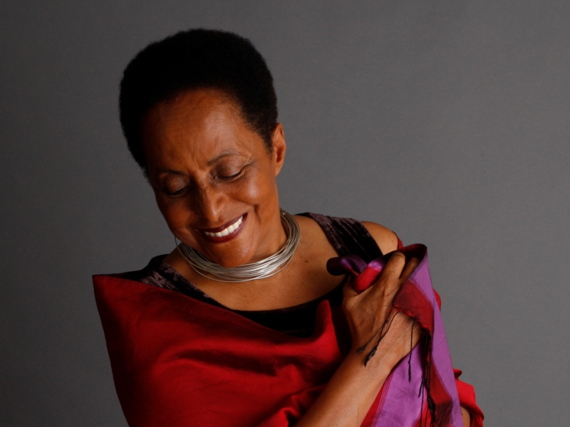

Susana Baca
Peruvian singer-songerwriter, ethnomusicologist, she has been a key figure in the Afro-Peruvian music.

- 1987-Poesía y Canto Negro
- 1991-Vestida Vida
- 1992-Canto Negro de las Americas!
- 1997-Fuego y Agua
- 2000-Eco de Sombras
- 2001-Lamento Negro
Encuentro en el Estudio